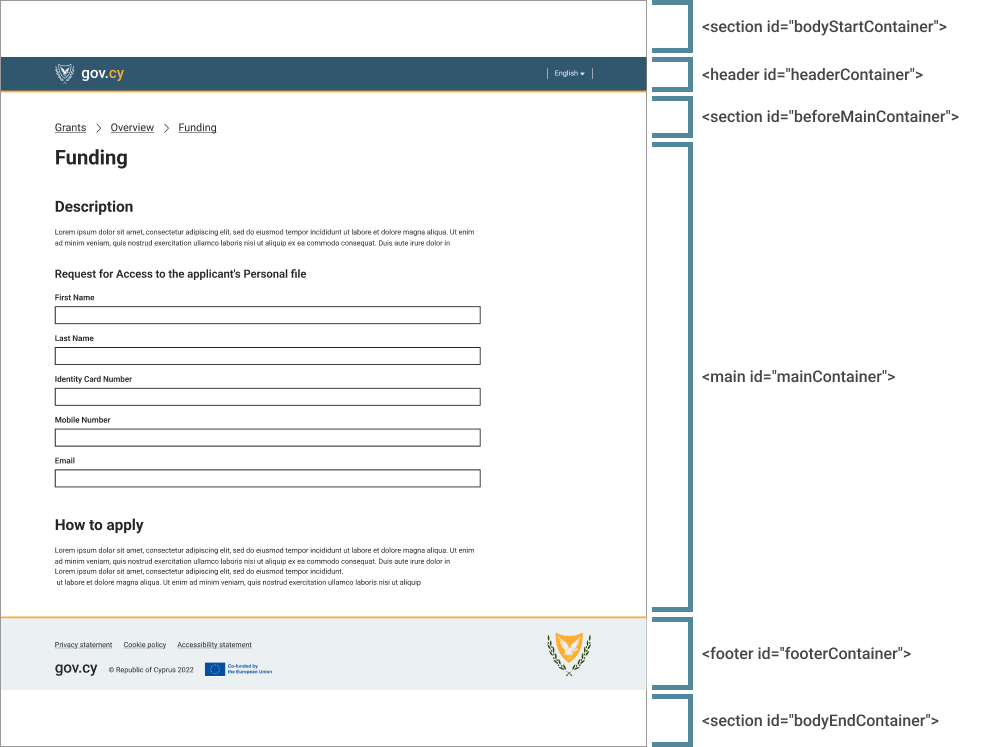

Page Template
Starter Template
Use the following HTML template for your gov.cy pages.
<!doctype html>
<html lang="el">
<head>
<!-- Required meta tags -->
<meta charset="utf-8">
<meta name="viewport" content="width=device-width, initial-scale=1">
<!-- Social -->
<meta property="og:description" content="Description of what the service does">
<meta property="og:title" content="Page title - Service title - gov.cy">
<meta property="og:url" content="https://SERVICE_URL">
<meta property="og:type" content="website">
<meta property="og:image" content="/img/icons-512.png">
<meta property="og:site_name" content="gov.cy">
<meta property="twitter:card" content="summary_large_image">
<meta property="twitter:url" content="https://SERVICE_URL">
<meta property="twitter:title" content="Page title - Service title - gov.cy">
<meta property="twitter:description" content="Description of what the service does">
<meta property="twitter:image" content="/img/icons-512.png">
<!-- Theme -->
<link rel="manifest" href="manifest.json">
<meta name="theme-color" content="#31576F">
<link rel="icon" type="image/png" sizes="48x48" href="/img/favicon-48x48.png">
<link rel="icon" type="image/png" sizes="32x32" href="/img/favicon-32x32.png">
<link rel="icon" type="image/png" sizes="16x16" href="/img/favicon-16x16.png">
<link rel="apple-touch-icon-precomposed" sizes="144x144" href="/img/apple-touch-icon-144x144-precomposed.png">
<link rel="apple-touch-icon-precomposed" sizes="120x120" href="/img/apple-touch-icon-120x120-precomposed.png">
<link rel="apple-touch-icon-precomposed" sizes="114x114" href="/img/apple-touch-icon-114x114-precomposed.png">
<link rel="apple-touch-icon-precomposed" sizes="72x72" href="/img/apple-touch-icon-72x72-precomposed.png">
<link rel="apple-touch-icon-precomposed" href="/img/apple-touch-icon-57x57-precomposed.png">
<!-- CSS -->
<link rel="stylesheet" href="https://cdn.jsdelivr.net/gh/gov-cy/govcy-design-system-test@v3.0.5/dist/css/govcy.uds.min.css" integrity="sha384-9L9rQVsl1hQXSc6nu+ORphMhPYnMhn4DDuJA6XWNrODtbkmVfUDHghx2xFam6dKi" crossorigin="anonymous">
<title>Page title - Service Name - gov.cy</title>
<meta name="description" content="Description of what the service does">
</head>
<body>
<!--bodyStart-->
<section class="govcy-container-fluid" id="bodyStartContainer">
<a href="#mainContainer" class="govcy-skip-link">Skip to main content</a>
...
</section>
<!--Header-->
<header class="govcy-header govcy-d-print-none" id="headerContainer">
...
</header>
<!--beforeMain-->
<section class="govcy-container" id="beforeMainContainer">
...
</section>
<!--main-->
<main class="govcy-container" id="mainContainer">
...
</main>
<!-- Footer -->
<footer class="govcy-footer govcy-d-print-none" id="footerContainer">
...
</footer>
<!--bodyEnd-->
<section class="govcy-container-fluid" id="bodyEndContainer">
...
</section>
<script src="https://cdn.jsdelivr.net/gh/gov-cy/govcy-design-system-test@v3.0.5/dist/js/govcy.uds.min.js" integrity="sha384-IsK02Rs1ZowVhbuTdaa9/QnMNgmtlmevhhyEQqANE3Uw7tQl+LOdmOLjP3aGcoTN" crossorigin="anonymous"></script>
</body>
</html>The code above includes all the sections described in the body section and uses the appropriate gov.cy CSS classes to accommodate spacing, header and footer components.
Head
Important Globals
The starter template employs the following important global styles and settings that you’ll need to be aware of when using it.
HTML5 doctype and lang
Use the HTML5 doctype
<!doctype html>
<html lang="el">
...
</html>The language of the document or a page element must be identified using the lang attribute as follows <html lang="en">. This is a very important accessibility requirement as it instructs the screen readers which language to use.
Warning
Change the lang attribute according to the language used in the document
If the language of the page is in Greek, you must have<html lang="el">.
If the language of the page is in English, you must have<html lang="en">.
If the language of the page is in Turkish, you must have<html lang="tr">.
Responsive meta tag
To ensure proper rendering and touch zooming for all devices, add the responsive viewport meta tag to your <head>
<meta name="viewport" content="width=device-width, initial-scale=1">Other Head Tags
title, description
Use the following tags inside the <head> tag.
<title>Page title - Service Name - gov.cy</title>
<meta name="description" content="Description of what the service does">Page titles should be unique and informative so that users know which page they are on. Change the content of the above tags, depending if you are implementing a content page or a service :
| tags | Content pages | Services |
|---|---|---|
| title | Use the following naming convention Page name - Site Name - gov.cy For example: About - Department of Information Technology Services - gov.cy |
Use the following naming convention Page title - Service Name - gov.cy For example: Address we can use to write to you - Update my personal details - gov.cy |
| description | Description of what the site is about | Description of what the service does |
For the gov.cy portal websites use the following naming conventions:
- For sub-site home page:
Site Name - gov.cyFor example:
Department of Information Technology Services - gov.cy - For other sub-site pages:
Page name - Site Name - gov.cy. For example:About - Department of Information Technology Services - gov.cy
social tags
Use the following meta tags inside the <head> tag.
<meta property="og:description" content="Description of what the service does">
<meta property="og:title" content="Page title - Service title - gov.cy">
<meta property="og:url" content="https://SERVICE_URL">
<meta property="og:type" content="website">
<meta property="og:image" content="/img/icons-512.png">
<meta property="og:site_name" content="gov.cy">
<meta property="twitter:card" content="summary_large_image">
<meta property="twitter:url" content="https://SERVICE_URL">
<meta property="twitter:title" content="Page title - Service title - gov.cy">
<meta property="twitter:description" content="Description of what the service does">
<meta property="twitter:image" content="/img/icons-512.png">Change the content of the above tags as follows:
og:title,twitter:title: Use the same naming convention as explained above for the<title>og:description,twitter:description: Description of what the service does. In most cases should be the same as with<meta name="description" content="...">og:url,twitter:url: The URL of the stating page of the serviceog:image,twitter:image: The URL of the icon. The icon should be 512 x 512 px. Use theicons-512.pngimage from our developer assets.og:type: Should bewebsiteog:site_name: Should begov.cytwitter:card: Should besummary_large_image
theme, app manifest and apple-touch-icon
Use the following tags inside the <head> tag.
<link rel="manifest" href="manifest.json">
<meta name="theme-color" content="#31576F">
<link rel="icon" type="image/png" sizes="48x48" href="/img/favicon-48x48.png">
<link rel="icon" type="image/png" sizes="32x32" href="/img/favicon-32x32.png">
<link rel="icon" type="image/png" sizes="16x16" href="/img/favicon-16x16.png">
<link rel="apple-touch-icon-precomposed" sizes="144x144" href="/img/apple-touch-icon-144x144-precomposed.png">
<link rel="apple-touch-icon-precomposed" sizes="120x120" href="/img/apple-touch-icon-120x120-precomposed.png">
<link rel="apple-touch-icon-precomposed" sizes="114x114" href="/img/apple-touch-icon-114x114-precomposed.png">
<link rel="apple-touch-icon-precomposed" sizes="72x72" href="/img/apple-touch-icon-72x72-precomposed.png">
<link rel="apple-touch-icon-precomposed" href="/img/apple-touch-icon-57x57-precomposed.png">The code above implies the existence of a manifest.json file. Use the following template for the manifest file.
{
"short_name": "Service title",
"name": "Service title - gov.cy",
"icons": [
{
"src": "/img/icons-128.png",
"type": "image/png",
"sizes": "128x128"
},
{
"src": "/img/icons-192.png",
"type": "image/png",
"sizes": "192x192"
},
{
"src": "/img/icons-512.png",
"type": "image/png",
"sizes": "512x512"
}
],
"start_url": "/LOCATION_OF_START_PAGE",
"background_color": "#31576F",
"display": "browser",
"scope": "/",
"theme_color": "#31576F"
}NOTE: if the location or filenames of your images are different, please adjust the code appropriately.
Body
Max-width
Max-width defines the maximum width of the content of a page.
Note that some sections such as Body start and Body end use a fluid design for background colour and styling, but content such as text, links and icons are restricted within the max-width limit.
The default maximum width is 1200px.
Responsive breakpoint
Breakpoint is the width that determines how your responsive layout behaves across devices. The default breakpoint is ≥768px.
Sections
All pages must use the following structure inside the <body> tag.
| Section Name | HTML Tag | Description |
|---|---|---|
| Body start | <section class="govcy-container-fluid" id="bodyStartContainer"> </section> |
To be used to render the content before the <header> such as skip link and cookie consent (Skip link must always be first). Width must be fluid, same as the viewport. |
| Header | <header class="govcy-header govcy-d-print-none" id="headerContainer"> </header> |
To be used as the page header. Width must be fluid, same as the viewport. Use the govcy-d-print-none class to hide the header on print. |
| Before main | <section class="govcy-container" id="beforeMainContainer"> </section> |
To be used to render the content before the <main> (i.e. back link, breadcrumbs and phase banner only ) . This section must comply with the max-width reference above and be placed in the center of the viewport with text-align set to start. |
| Main | <main class="govcy-container" id="mainContainer"> </main> |
To be used to render the service/website content (i.e. question page. This section can have one of the layouts described in the layouts page. This section must comply with the max-width reference above and be placed in the center of the viewport with text-align set to start. |
| Footer | <footer class="govcy-footer govcy-d-print-none" id="footerContainer"> </footer> |
To be used as the page footer. Use the govcy-d-print-none class to hide the footer on print. |
| Body end | <section class="govcy-container-fluid" id="bodyEndContainer"> </section> |
To be used to render the content after the <footer>. Width must be fluid, same as the viewport. |

Element Placement Order
Depending on the website or service, you might need to implement more than one design elements withing a section. Use the following order in each section:
- Body start section
- Header section
- Header component
- Before main section
- Breadcrumbs or Back link component
- Phase banner component
- Main section
- Error summary component, in the case of errors.
- Header 1
<h1>. If your using an input component and you are asking just one question on a page, follow the instructions for single question page labels and legends and adjust the header accordingly. - Other components, patterns or typography
- Footer section
- Footer component
See below an sample page with most design elements present in the correct order.
Skip to main content
Always include the skip link right after the opening <body> in the “Body start” section (bodyStartContainer).
<a href="#mainContainer" class="govcy-skip-link">Skip to main content</a>Make sure that the target element of the anchor is the main section container and that it includes the error summary if applicable, the h1 and the main content of the page. However, if you’re using a component that must be read before the user can skip to the main content (such as a cookie banner) , place the skip link immediately after the component.
The skip link component is visually hidden until a keyboard press activates it. The link should give the users the option to bypass the top-level navigation links and jump to the main content (mainContainer) of the page.
Use the following content:
- In English:
Skip to main content - In Greek:
Μεταφορά στο κεντρικό περιεχόμενο
Main section
The main section is where the content of each page is placed. If you are building a service, this is where you will place your components and patterns.
Remember that services should work independently and in isolation from other services, and that the main section should help users focus on their goal. Include only elements that are necessary for the user to complete the task at hand.
For more information about the <main> section content, see the layouts page.
Sample pages
Here are some sample pages using the gov.cy page template.
Content pages:
- Page with title and paragraph
- Page with title, different headings and paragraphs
- Page with back link
- Page with breadcrumbs
- Page with phase banner
Service pages:
Accessibility
Make sure:
- you include the skip link in your page
- you use the correct lang attribute in your page
- the page titles are unique